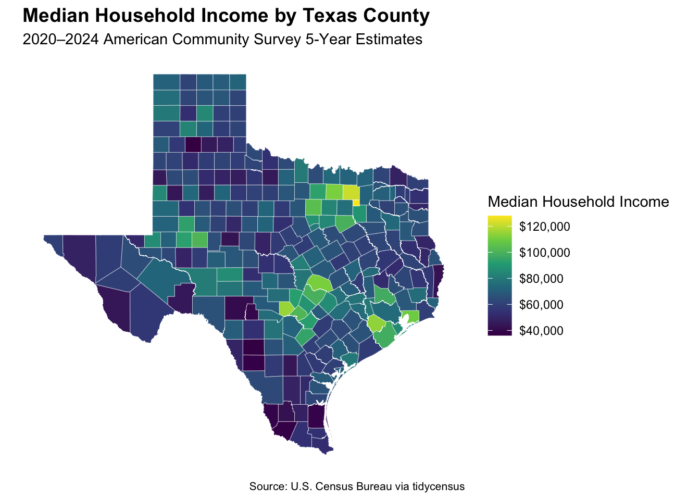

library(tidycensus)
library(tigris)
library(sf)
library(dplyr)
library(tidyr)
library(ggplot2)
library(readr)
options(tigris_use_cache = TRUE)Assignment 3
Setup
ACS Variables
vars <- load_variables(2024, "acs5")
vars |>
dplyr::filter(grepl("^B19", name)) |>
dplyr::slice_head(n = 10)# A tibble: 10 × 4
name label concept geography
<chr> <chr> <chr> <chr>
1 B19001A_001 Estimate!!Total: Household Income … tract
2 B19001A_002 Estimate!!Total:!!Less than $10,000 Household Income … tract
3 B19001A_003 Estimate!!Total:!!$10,000 to $14,999 Household Income … tract
4 B19001A_004 Estimate!!Total:!!$15,000 to $19,999 Household Income … tract
5 B19001A_005 Estimate!!Total:!!$20,000 to $24,999 Household Income … tract
6 B19001A_006 Estimate!!Total:!!$25,000 to $29,999 Household Income … tract
7 B19001A_007 Estimate!!Total:!!$30,000 to $34,999 Household Income … tract
8 B19001A_008 Estimate!!Total:!!$35,000 to $39,999 Household Income … tract
9 B19001A_009 Estimate!!Total:!!$40,000 to $44,999 Household Income … tract
10 B19001A_010 Estimate!!Total:!!$45,000 to $49,999 Household Income … tract Data Collection
state_abbr <- "TX"
geo_level <- "county"
my_vars <- c(
income = "B19013_001",
pov = "B17001_002",
povden = "B17001_001"
)
year_acs <- 2024
survey <- "acs5"
acs_wide <- get_acs(
geography = geo_level,
variables = my_vars,
state = state_abbr,
year = year_acs,
survey = survey,
geometry = TRUE,
output = "wide"
)Getting data from the 2020-2024 5-year ACSData Processing
acs_wide <- acs_wide |>
mutate(
pov_rate = povE / povdenE,
pov_moe = moe_prop(povE, povdenE, povM, povdenM)
)Median Household Income Map
ggplot(acs_wide) +
geom_sf(aes(fill = incomeE), color = "white", linewidth = 0.1) +
scale_fill_viridis_c(
name = "Median Household Income",
labels = scales::label_dollar()
) +
labs(
title = "Median Household Income by Texas County",
subtitle = "2020–2024 American Community Survey 5-Year Estimates",
caption = "Source: U.S. Census Bureau via tidycensus"
) +
theme_minimal() +
theme(
plot.title = element_text(size = 14, face = "bold"),
plot.caption = element_text(size = 8),
axis.text = element_blank(),
axis.title = element_blank(),
panel.grid = element_blank()
)
Poverty Rate Rankings
top10 <- acs_wide |>
st_drop_geometry() |>
arrange(desc(pov_rate)) |>
select(NAME, pov_rate, pov_moe) |>
slice_head(n = 10) |>
mutate(Group = "Highest 10")
bottom10 <- acs_wide |>
st_drop_geometry() |>
arrange(pov_rate) |>
select(NAME, pov_rate, pov_moe) |>
slice_head(n = 10) |>
mutate(Group = "Lowest 10")
poverty_table <- bind_rows(top10, bottom10) |>
mutate(
County = sub(", Texas$", "", NAME),
`Poverty Rate` = scales::percent(pov_rate, accuracy = 0.1),
`Margin of Error` = scales::percent(pov_moe, accuracy = 0.1)
) |>
select(Group, County, `Poverty Rate`, `Margin of Error`)
knitr::kable(
poverty_table,
caption = "Texas Counties with the Highest and Lowest Poverty Rates"
)| Group | County | Poverty Rate | Margin of Error |
|---|---|---|---|
| Highest 10 | Dimmit County | 41.1% | 8.9% |
| Highest 10 | Zapata County | 38.4% | 6.0% |
| Highest 10 | Zavala County | 33.9% | 9.5% |
| Highest 10 | Starr County | 33.5% | 3.2% |
| Highest 10 | Duval County | 33.3% | 8.4% |
| Highest 10 | Presidio County | 32.0% | 12.8% |
| Highest 10 | Edwards County | 31.9% | 23.2% |
| Highest 10 | Jim Hogg County | 31.4% | 11.1% |
| Highest 10 | Swisher County | 30.1% | 6.9% |
| Highest 10 | Kleberg County | 28.1% | 4.3% |
| Lowest 10 | Rockwall County | 4.0% | 0.7% |
| Lowest 10 | Sterling County | 4.3% | 2.9% |
| Lowest 10 | Sutton County | 4.5% | 2.9% |
| Lowest 10 | Kendall County | 5.0% | 1.4% |
| Lowest 10 | Armstrong County | 5.2% | 2.8% |
| Lowest 10 | Foard County | 5.6% | 4.4% |
| Lowest 10 | Roberts County | 5.6% | 3.9% |
| Lowest 10 | Loving County | 6.1% | 2.5% |
| Lowest 10 | Hemphill County | 6.2% | 3.2% |
| Lowest 10 | Collin County | 6.2% | 0.4% |
Uncertainty Check
Dimmit County has an estimated poverty rate of 41.1% with a margin of error of 8.9 percentage points, producing an approximate 90% confidence interval of 32.2% to 50.0%. Zapata County has an estimated poverty rate of 38.4% with a margin of error of 6.0 percentage points, producing an interval of 32.4% to 44.4%. Because these intervals overlap substantially, the published ranking does not demonstrate that Dimmit County’s true poverty rate is higher than Zapata County’s. The ordering should therefore be interpreted as a ranking of point estimates rather than a definitive difference between the counties.
Methods Note
This analysis uses the 2024 ACS 5-year estimates for all 254 counties in Texas. County geography was selected because it provides meaningful comparisons across the state while remaining readable on a single map. Median household income (B19013_001) is mapped to show the spatial distribution of economic resources. Poverty status (B17001_002) and its corresponding universe (B17001_001) are used to calculate county poverty rates rather than raw counts, which would largely reflect differences in population size.
The poverty-rate margin of error was calculated with moe_prop() using the margins of error for both the numerator and denominator. The estimates show substantial geographic variation, but several counties—particularly those with small populations—have wide margins of error. Therefore, the top and bottom rankings should be interpreted cautiously. Overlapping confidence intervals indicate that small differences in the point estimates do not necessarily represent meaningful differences in the underlying county poverty rates.
Save Data
write_csv(
st_drop_geometry(acs_wide),
paste0("acs_", state_abbr, "_", year_acs, ".csv")
)